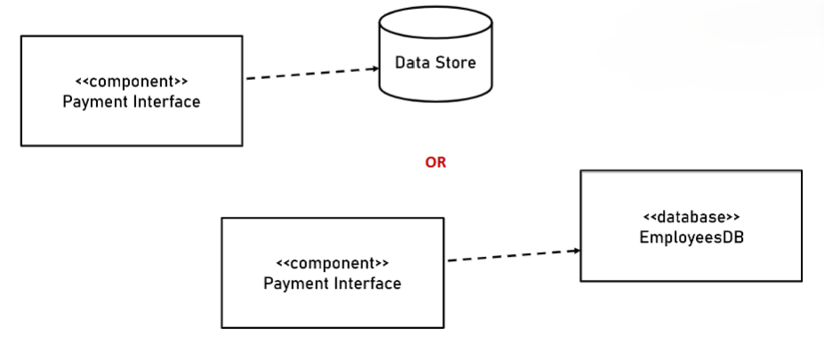
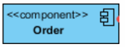
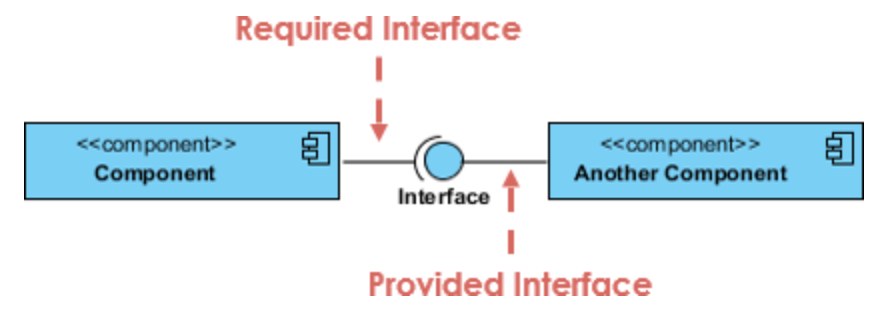
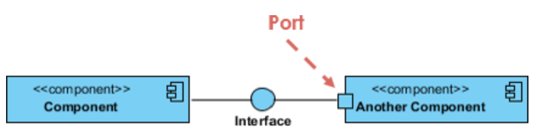
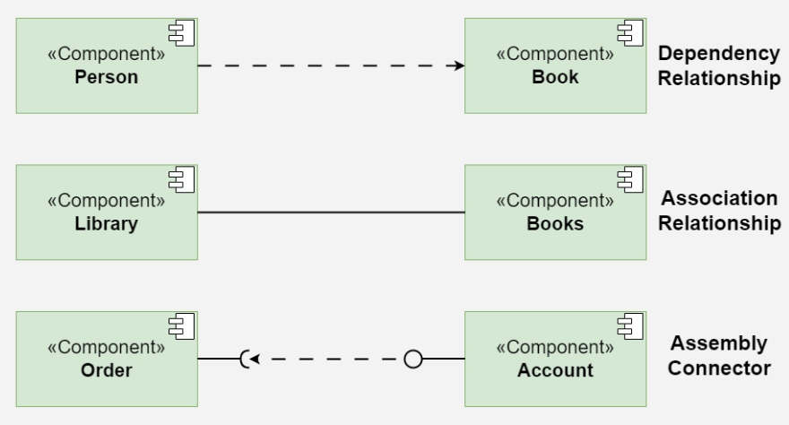
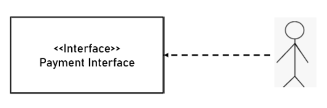
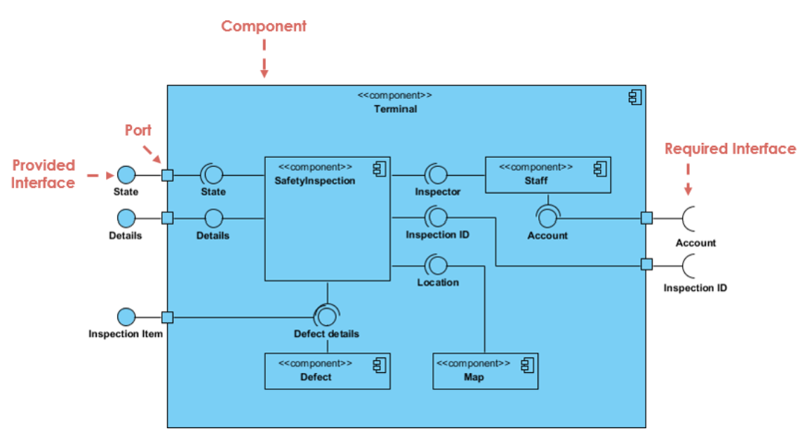

1. Data Component
مكوّن مسؤول عن البيانات، مثل تخزينها أو إدارتها أو التعامل معها.

مخطط المكوّنات
يُستخدم مخطط المكوّنات لتوضيح البنية الداخلية للنظام من ناحية المكوّنات البرمجية (Components) والعلاقات بينها. يساعد المخطط على فهم كيفية تقسيم النظام إلى أجزاء، وكيفية تواصل هذه الأجزاء وتوفير الخدمات لبعضها من خلال الواجهات (Interfaces)، ويوضّح الاعتماد بين المكوّنات وطريقة اتصالها.
| العنصر | الرمز | الشرح |
|---|---|---|
| Component |
 |
مكوّن برمجي يمثّل جزءًا من النظام ويوفّر وظيفة محددة، ويمكن أن يتفاعل مع مكوّنات أخرى. يُرسم عادةً على شكل مستطيل مع رمز المكوّن أو باستخدام التسمية «component». |
| Provided Interface (Lollipop) |
 |
واجهة يوفّر المكوّن خدماتها للمكوّنات الأخرى، ويُمثّل رمزها بدائرة صغيرة تُعرف باسم Lollipop. |
| Required Interface (Socket) | واجهة يحتاج المكوّن إلى خدماتها من مكوّن آخر، ويُمثّل رمزها بنصف دائرة تُعرف باسم Socket. | |
| Port |
 |
نقطة اتصال على حدود المكوّن توضّح مكان تفاعله مع البيئة الخارجية أو المكوّنات الأخرى. |
| العلاقة | الشرح | الرمز |
|---|---|---|
| Dependency | علاقة اعتماد توضّح أن أحد المكوّنات يعتمد على مكوّن آخر. |
 |
| Association | علاقة توضّح وجود ارتباط بين مكوّنين. | |
| Assembly Connector | رابط يصل الواجهة المطلوبة (Socket) بالواجهة المقدّمة (Lollipop)، ليوضّح أن المكوّن الذي يحتاج إلى خدمة متصل بالمكوّن الذي يوفّرها. |
ملاحظة: غالبًا ما تُرسم علاقتا Dependency وAssociation في الرسم الأولي عندما لا يكون الاتصال الفعلي بين المكوّنات معروفًا بعد. أمّا العلاقة التي توضّح الاتصال الفعلي بين الواجهات، فهي Assembly Connector، الذي يربط الـ Socket بالـ Lollipop.
مكوّن مسؤول عن البيانات، مثل تخزينها أو إدارتها أو التعامل معها.

مكوّن وسيط يعمل بوصفه مترجمًا أو حلقة وصل بين مكوّنين يستخدمان لغتي برمجة مختلفتين، ويساعد على تمكين التواصل بينهما.
مكوّن يوفّر خدمة محددة يمكن لمكوّنات أخرى استخدامها من خلال الواجهات. والـ Stereotype الخاصة بها هي «Component».
مكوّن مسؤول عن واجهة المستخدم، أي الجزء الذي يتفاعل معه المستخدم. في هذا التصنيف، يمثّل الواجهة فقط ولا يحتوي على Lollipop.

عند استخدام Agile، يُرسم المخطط اعتمادًا على متطلبات المستخدم (User Requirements) والخبرة. أمّا عند استخدام Waterfall، فيُرسم اعتمادًا على Class Diagram؛ إذ تتحول الوظائف (Functions) إلى Lollipops. كذلك، تُرسم الـ Classes داخل الـ Component وتُربط بكل Lollipop يوفّرها المكوّن.
يمكن أن يرتبط الـ Port بأكثر من Lollipop. إذا ارتبط بأكثر من واجهة، نضع اسمًا للـ Port لتوضيح نقطة الاتصال.
يمكن وجود Lollipop دون اتصال بـ Socket؛ لأن الخدمة التي يوفّرها المكوّن قد تُستخدم في برنامج آخر.
يجب ألّا يوجد Socket دون اتصال بـ Lollipop؛ لأن ذلك يعني أن المكوّن يحتاج إلى خدمة غير موفّرة أو غير مرتبطة بمصدر يقدّمها، وبالتالي يكون البرنامج ناقصًا من ناحية هذا الاعتماد.
